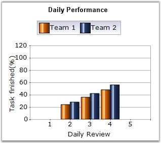

Column Charts are among the most common chart types that are being used. It uses vertical bars (called columns) to display different values of one or more items. It is similar to a bar chart except that, here the bars are vertical and not horizontal. Points from adjacent series are drawn as bars next to each other.
It is used for comparing the frequency, count, total or average of data in different categories. It is ideal for showing the variations in the value of an item over time.
The following image shows a multi series Column Chart.

Figure 50: Chart displaying Column Series
Chart Details
|
Details | |
|
Number of Y values per point |
1 |
|
Number of Series |
One or More |
|
Cannot be Combined with |
Pie, Bar, Stacked Bar charts, Polar, Radar. |
Column series can be added to the chart using the following code.
|
[C#]
// Create chart series and add data points into it. ChartSeries series = this.ChartWebControl1.Model.NewSeries("Series Name",ChartSeriesType.Column); series.Points.Add(0, 1); series.Points.Add(1, 3); series.Points.Add(2, 4);
// Add the series to the chart series collection. this.ChartWebControl1.Series.Add(series); |
|
[VB.NET]
' Create chart series and add data points into it. Dim series As ChartSeries = Me.ChartWebControl1.Model.NewSeries("Series Name", ChartSeriesType.Column) series.Points.Add(0, 1) series.Points.Add(1, 3) series.Points.Add(2, 4)
' Add the series to the chart series collection. Me.ChartWebControl1.Series.Add(series) |